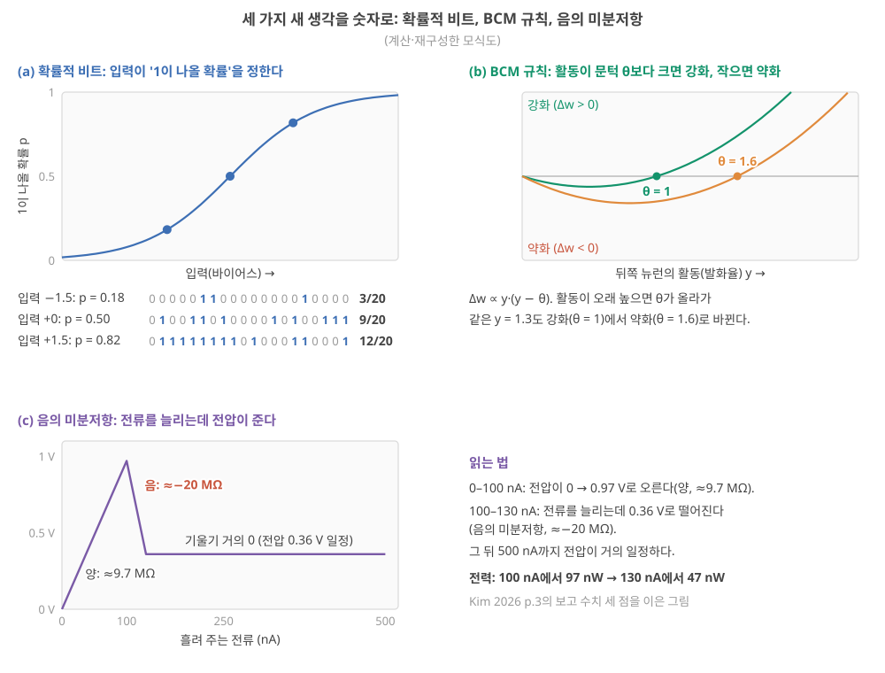

D30. 결정: 이 연구를 할 가치가 있는가, 좁혀야 하는가, 접어야 하는가?
Phase 5 · 나는 무엇을 연구해야 하는가 · 11월 21일 (토)
답에 들어가야 할 것 — A–E 템플릿으로 연구문제 1개 서술, 또는 접는·좁히는 결론과 그 근거
기본 경로: ① 사전 테스트(권장) → ② 학습자료(구간마다 잠깐 점검까지) → ③ 백지 회상 → ④ 가르치듯 내 답. ⓪·⑤와 접힌 '심화'·'추가 연습'은 선택입니다. 한 번에 끝낼 필요 없이 구간 단위로 나눠 읽어도 되고, 다시 열면 '지난번 읽던 곳' 링크가 뜹니다.
① 사전 테스트와 먼저 만들어 보기
아직 배우지 않은 내용을 먼저 풀어 봅니다. 많이 틀리는 것이 정상이고, 그게 목적입니다. 먼저 답해 본 문제는 읽을 때 눈에 들어오고 더 오래 남습니다. 문제마다 정답만 보이고, 이유는 학습자료와 ⑤ 다시 풀기에서 봅니다. 다 풀면 학습자료가 열립니다. 건너뛰려면 학습자료 위의 '그냥 읽기'를 누르세요(권장 단계일 뿐 필수는 아닙니다).
② 학습자료
30일의 마지막 날입니다. 30일 내내 따라온 물리 reservoir computing(RC)을 한 번 더 짧게 말하면, 고정된 물리계(이온 소자)가 입력 이력을 내부 상태로 바꾸고, 그 상태에 가중치를 곱해 더하는 마지막 층인 readout만 데이터로 학습하는 방식이었습니다(D8 기초). D28에서 가설 후보를 세우는 방법을, D29에서 각 후보를 가장 싸게 죽일 수 있는 최소 실험과 기각 조건을 봤습니다. 오늘은 결정합니다. 이 연구를 할 가치가 있는가, 좁혀야 하는가, 접어야 하는가.
오늘 자료는 세 부분입니다. 앞의 두 구간은 결정하는 방법입니다. 접는 기준을 먼저 대조하고, 그다음 결정을 적고, "한다" 또는 "좁혀서 한다"라면 연구문제 하나를 A–E 양식으로 씁니다. 가운데 두 구간은 사용자가 따로 물은 질문입니다. 트랜스포머·LLM·어텐션은 무엇이고, RC나 물리 소자로 그것을 만들려는 시도는 어디까지 왔나? 뒤의 두 구간은 RC의 의미가 줄어든다면 이온 컴퓨팅은 어디로 가나, 그리고 오늘의 결정과 30일 회고입니다. 결정의 답은 오늘도 자료가 아니라 내가 씁니다.
- 한다·좁혀서 한다·접는다는 각각 무엇이고, 어떤 순서로 판단하나? '모름'과 이미 쓴 시간은 어떻게 다루나?
- A–E 연구문제 양식의 각 칸은 무엇에 답해야 하나? 좋은 A–E의 조건은?
- 언어 모델은 무엇을 예측하나? 단어는 어떻게 숫자가 되고, 어텐션은 어떤 계산인가?
- RNN·RC·어텐션은 무엇이 다른가? 물리 소자·RC로 어텐션이나 트랜스포머를 구현한 시도는 무엇을 보였고 무엇을 보이지 못했나?
- RC의 의미가 줄어든다면 기술은 어디로 가나? 차세대 이온 컴퓨팅 후보는 무엇을 약속하고 아직 무엇이 없나?
- 오늘의 결정을 어떻게 적고, 30일 전의 나와 무엇이 달라졌나?
1. 결정의 세 갈래: 한다, 좁혀서 한다, 접는다
이 구간을 읽고 나면 한다·좁혀서 한다·접는다를 각각 정의하고, "접는 기준 대조 → 치명 기준 → 모름의 판정 가능성 → 결정"의 순서로 가상의 장부 하나를 판정하며, '모름'과 매몰 비용을 다루는 규칙을 말할 수 있다.
왜 순서가 중요한가. D30 양식 안내는 "먼저 D1에 적어 둔 접는 기준을 가져와 하나씩 대조하고, 그다음에 결정을 적는다. 순서를 바꾸면 결정이 감정으로 내려진다"고 적습니다. 결론을 먼저 정하면, 장부의 줄 가운데 그 결론을 뒷받침하는 줄만 눈에 들어오기 때문입니다(D28의 확증 편향). 이 교재는 D1부터 날마다 "접는 기준 후보"를 한 줄씩 장부에 적어 왔고, D29에서 기각 조건을 숫자로 적는 법을 봤습니다(D29 기초: 기각 조건). 짧게 다시 말하면, 기각 조건은 결과를 보기 전에 숫자로 적은 "이 결과면 접는다"였습니다. 오늘은 그 장부를 펼쳐 놓고 결정합니다.
할 것 / 좁힐 것 / 접을 것: 판단 기준
세 갈래의 뜻(이 교재의 정의).
- 한다: 접는 기준을 통과했고, 남은 '모름'은 정해 둔 기간 안의 최소 실험으로 판정할 수 있으며, A–E로 연구문제 하나를 쓸 수 있다.
- 좁혀서 한다: 일부 기준이 걸렸거나 '모름'이 크지만, 범위를 줄이면 기준을 통과하는 버전이 있다. 줄이는 방향은 넷이다(아래 표).
- 접는다: 방향 전체를 무너뜨리는 치명 기준이 걸렸고, 좁혀도 통과하는 버전이 없다. 접는 것은 "이 틀"(예: 이온 RC를 계산 소자로 쓰는 연구)이지 소재나 연구자가 아니다. D1에서 본 넷째 선택지("뉴로모픽이라는 틀을 떠나 이온 고분자의 다른 문제로")가 이것이다(D1 5구간).
좁히는 네 방향.
| 방향 | 무엇을 줄이나 | 예 | 어느 날의 재료 |
|---|---|---|---|
| 응용을 좁힌다 | 목표 응용의 요구 사양 | 몸 안 수년 → 피부 위·단기 이식 | D27 교차표 |
| 주장을 좁힌다 | 증거 계단의 높이 | "저전력 시스템" → "원시 입력보다 시험 오차가 낮다" | D25 계단, D18 증거 수준 |
| 메커니즘을 좁힌다 | 다루는 이온 물리의 범위 | 여러 메커니즘이 섞인 소자 → 하나를 떼어 낸 소자 | D20 메커니즘 표 |
| 역할을 좁힌다 | 이온이 맡는 일 | 계산 전체 → 계면의 감지·전처리 | D27의 반론 |
판단 규칙 다섯. 해석
- 기준이 먼저, 결정은 그다음. 대조 전에 결론을 적지 않는다.
- 치명 기준을 대조 전에 표시한다. 장부의 줄 가운데 "이것이 걸리면 방향 전체가 무너지는 줄"을 먼저 고른다. 결과를 보고 고르면 1번이 깨진다.
- '모름'은 '통과'가 아니다. '모름'은 판정 가능한가로 다시 나눈다. 정해 둔 기간 안의 최소 실험으로 판정할 수 있으면 "좁혀서 한다"의 일감이 되고, 판정할 수 없으면 그 가정 위에 연구를 세우지 않는다.
- 이미 쓴 시간·돈(매몰 비용)은 칸에 넣지 않는다. 2년을 썼다는 사실은 앞으로의 가치에 대한 근거가 아니다.
- 결정은 영원하지 않다. 결정에는 "다시 결정할 날짜"를 함께 적는다. 그날 장부를 다시 대조한다.
그림 1이 이 규칙을 흐름으로 그린 것입니다. 읽는 법: 위에서 아래로, 마름모마다 "예/아니요"를 따라갑니다. 초록이 계속하는 쪽, 빨강이 접거나 좁히는 쪽입니다.

가상의 장부 하나를 판정해 보기. 표에 나오는 기준선은 소자에서 재료를 한 가지씩 뺀 비교 대상(원시 입력 + 같은 readout, 최근 입력 몇 개를 그대로 늘어놓고 직선을 맞추는 지연 탭 + 선형 회귀 등)이었습니다(D16 기초). 아래는 가상의 연구자 X가 D2–D27에서 적었을 법한 접는 기준 후보 여덟 줄과, X가 오늘 매긴 판정입니다. 줄의 문장은 각 날의 "장부에 옮길 후보"에서 가져왔고, 판정은 X의 것이지 내 판정이 아닙니다. 판정하는 순서를 보는 예입니다.
| # | 접는 기준 후보 (날) | X의 판정 | 근거(X) | 치명? |
|---|---|---|---|---|
| 1 | 내 소자가 줄이는 벽을 하나도 지목하지 못하면 '에너지 효율'을 연구 동기로 쓰지 않는다 (D2) | 걸림 | 벽을 지목하지 못함 | 아니요 |
| 2 | 시스템 전력이 MCU + 작은 신경망보다 낮다는 계산을 못 하면 '엣지 적합'을 동기로 쓰지 않는다 (D5) | 모름 | 계산 안 함 | 아니요 |
| 3 | 응용의 기억 창과 소자 τ가 한 자릿수 안에서 겹치지 않으면 그 응용을 쓰지 않는다 (D13) | 통과 | 박동 0.6–1 s, 소자 τ 수십 ms–수 s | 아니요 |
| 4 | 지연 탭 + 선형 회귀 기준선을 이기지 못하고 비용 이득도 없으면 '계산 소자'라 쓰지 않는다 (D16) | 모름 | 측정 없음 | 예 |
| 5 | 소자 간 CV(변동계수 = 표준편차 ÷ 평균)가 readout 이식을 깨고 응용이 칩별 재보정을 허용하지 않으면 그 응용을 쓰지 않는다 (D18) | 모름 | 소자 간 CV 미측정 | 아니요 |
| 6 | 원시 입력 + 같은 readout 기준선보다 낫지 않으면 계산 이득을 동기로 쓰지 않는다 (D25) | 모름 | 측정 없음 | 예 |
| 7 | 1년 반복 횟수의 1/1000도 견디지 못하고 원인이 소재 자체라면 그 응용을 쓰지 않는다 (D26) | 걸림(몸 안 수년) | 보고된 연성 소자 최대 약 4,000 펄스 vs 1년 약 1.6 × 10⁹ 펄스(D26) | 아니요 |
| 8 | 계면 전처리가 기준선보다 아무것도 줄이지 못하면 '이온 계산' → '이온 계면'으로 좁힌다 (D27) | 모름 | 측정 없음 | 아니요 |
단계 1 — 치명 기준을 먼저 표시했다. X는 대조 전에 4번과 6번을 치명 기준으로 골랐습니다. X의 방향은 "이온 소자로 계산한다"이므로, 소자가 기준선을 못 이기면 방향 전체가 무너지기 때문입니다.
단계 2 — 셈. 통과 1(3번), 걸림 2(1번, 7번), 모름 5(2, 4, 5, 6, 8번). 치명 기준(4, 6번)은 '걸림'이 아니라 '모름'입니다. 그러니 흐름의 ②에서 "접는다"로 가지 않습니다.
단계 3 — 걸린 줄은 좁혀서 피한다. 1번이 걸렸으므로 동기 문장에서 '에너지 효율'을 뺍니다(주장을 좁힘). 7번이 걸렸으므로 몸 안 수년 응용을 접고 피부 위·단기 응용으로 갑니다(응용을 좁힘).
단계 4 — '모름'의 판정 가능성. 4번과 6번은 기존 소자와 계산으로 3개월 안에 판정할 수 있습니다(D29의 사다리 1–2단). D29의 실험 비용 사다리는 실험을 싼 것부터 늘어놓은 단이었습니다. 0 문헌·옛 데이터 → 1 계산·시뮬레이션 → 2 기존 소자로 새 측정 → 3 새 소자 한 종 → 4 여러 소자·대조군 → 5 배열·회로 → 6 시스템(D29 1구간). 5번은 소자 여러 개가 필요해 6개월이 걸립니다. 2번과 8번은 지금 방향(계산 기여)의 판정에는 급하지 않습니다.
단계 5 — X의 결정. "좁혀서 한다: 피부 위·단기 응용, '에너지 효율' 주장 없이. 3개월 안에 원시 입력 기준선 실험(6번)과 지연 탭 기준선 실험(4번)을 하고, 둘 중 하나라도 D29식 기각 구간(결과를 보기 전에 숫자로 적어 둔 '이 결과면 접는다'의 범위, D29 4구간)이면 '이온 계산'을 접고 '이온 계면'(8번)으로 옮긴다. 다시 결정할 날: 3개월 뒤." 결정 문장에 판정 실험, 기각 조건, 날짜가 모두 들어 있습니다.
X의 결정을 내 결정으로 옮기지 않는다. 같은 장부에서도 치명 기준을 무엇으로 고르느냐(예: 방향이 "계산"이 아니라 "계면 소재"라면 4·6번은 치명이 아님)에 따라 결정이 달라집니다. 그래서 치명 기준을 고르는 일이 결정의 절반입니다.
- 한다(기준 통과 + 모름은 기간 안에 판정 가능), 좁혀서 한다(응용·주장·메커니즘·역할 중 하나 이상을 줄이면 통과), 접는다(치명 기준이 걸리고 좁혀도 안 됨). 접는 것은 틀이지 소재가 아니다.
- 순서: 장부 대조 → 치명 기준(대조 전에 표시) → 모름의 판정 가능성 → 결정 + 다시 결정할 날짜.
- '모름'은 '통과'가 아니다. 매몰 비용은 칸에 넣지 않는다.
- 가상의 X: 통과 1, 걸림 2, 모름 5, 치명 기준 둘은 모름 → "좁혀서 한다"(3개월 판정 실험 + 날짜). 치명 기준을 무엇으로 고르느냐가 결정을 바꾼다.
2. A–E로 연구문제 한 개 쓰기
이 구간을 읽고 나면 A–E 양식의 다섯 칸이 각각 무엇에 답해야 하는지, 어느 날의 재료로 채우는지 말하고, 좋은 A–E의 조건으로 막연한 초안 하나를 고쳐 쓸 수 있다.
원래 계획표에는 "A–E 템플릿"이라는 이름만 있었고 각 항목의 정의는 없었습니다. 아래 정의는 이 교재가 새로 제안하는 것입니다. 마음에 들지 않으면 항목을 바꾸거나 더해도 됩니다. 결정이 "접는다"라면 A–E 대신 양식의 "접거나 좁히는 경우의 근거" 칸을 씁니다.
다섯 칸과 재료. 표의 '재료' 열에 나오는 앞 날의 낱말을 먼저 되짚습니다. D28의 사슬 ①은 "응용 → 요구 → 병목 → 필요한 값"으로 왜 필요한가를, 사슬 ②는 "설계 손잡이 → 이온 동역학 → 소자 응답 → 계산 지표"로 왜 그렇게 되는가를 잇는 줄이었습니다(D28 기초: 가설의 두 사슬). D29의 세 구간은 결과를 보기 전에 숫자로 적어 둔 성공·모호·기각의 범위였습니다(D29 4구간).
| 칸 | 답해야 할 질문 | 채우는 재료 | 흔한 실수 |
|---|---|---|---|
| A. 문제 | 지금 분야가 답하지 못하는 구체적인 질문은? (한두 문장) | D25 증거 표의 빈칸, D26 병목, D27 교차표의 "모름" | 주제를 문제로 씀("안정성을 높인다") |
| B. 왜 지금, 왜 나인가 | 풀리면 어느 병목이 풀리나? 내가 풀 수 있는 이유는? | 병목 장부의 한 줄, D28 사슬 ①, 내 소재·장비·경험 | "중요하다"만 쓰고 장부의 어느 줄인지 없음 |
| C. 가설과 예측 | 참이면 어떤 측정에서 어떤 숫자가? 틀리면? | D28 가설과 사슬 ② | 틀릴 수 없게 씀 |
| D. 검증과 기각 조건 | 무엇을 만들고(또는 쓰고) 무엇을 재며, 어떤 결과면 접나? | D29 최소 실험, 기준선, 세 구간 | 숫자가 없음, 기준선이 없음 |
| E. 결과가 바꾸는 것 | 다른 연구자는 이 결과를 보고 무엇을 다르게 하나? 실패해도 무엇을 배우나? | D29 "성공하면/실패하면" | "논문이 나온다" |
좋은 A–E의 조건. 양식 안내가 넷을 듭니다. A는 한 문장으로 말할 수 있고, C는 틀릴 수 있으며, D에 숫자가 있고, E는 "내 논문이 나온다"가 아니라 다른 사람이 무엇을 다르게 할지를 말한다. 이 교재는 둘을 더합니다. B가 병목 장부의 특정 줄을 가리키고, D의 첫 실험이 D29 사다리의 가장 낮은 단에 있다. 해석
고쳐 쓰기 예시. 양식 안내의 작성 예시는 하이드로겔 소자의 drift를 봉지로 줄이는 연구입니다. 그것도 예시일 뿐입니다. 여기서는 같은 drift 주제를 D28·D29의 예시 A(이온겔, 용매 증발)로 바꿔, 막연한 초안부터 고쳐 쓰는 과정을 봅니다. 이 예시는 쓰는 방법을 보이는 것이지 추천 연구가 아닙니다.
초안. A: "이온겔 뉴로모픽 소자의 안정성을 높인다." C: "새 이온겔은 안정적일 것이다." D: "장기 안정성을 측정한다." E: "실용적인 이온 소자를 만든다." — 네 칸 모두 막연합니다. A는 주제이고, C는 틀릴 수 없으며, D에 숫자가 없고, E는 다른 사람이 할 일을 말하지 않습니다.
A를 고치면. "이온겔 소자의 응답 drift가 용매 증발에서 오는지, 그리고 고분자 설계로 그것을 줄여 같은 readout을 1주 이상 쓸 수 있는지 잰 연구를 폴더 문헌에서 찾지 못했다." 한 문장이고, 무엇이 비어 있는지가 보입니다.
B를 고치면. "병목 장부의 'readout 재보정 주기 vs drift' 줄(D26·D27)과 연결된다. 지금 겔의 재보정 주기는 약 2.5시간으로 추정되고 응용은 1주를 요구한다(약 67배 차이, D29). 나는 이온겔 조성을 바꿀 수 있고 24시간 연속 측정 장비가 있다." 장부의 줄과 숫자, 내 자원이 들어 있습니다.
C와 D를 고치면. C: "drift는 용매 증발에서 온다. 그렇다면 같은 두께에서 24시간 동안 무게 감소와 응답 감소가 함께 움직이고, 비휘발 용매로 바꾼 겔은 drift 속도가 10배 이상 준다. 틀리면 무게가 그대로인데 응답이 변한다." D: "지금의 휘발 용매 겔 7개와 실험실에 이미 있는 비휘발(이온액체) 겔 7개로 24시간 측정(사다리 2단, 비휘발 겔이 없으면 새로 만들어야 하니 3단). 성공: 무게–응답 상관이 뚜렷하고 비휘발 겔의 drift가 10배 이상 감소. 기각: 3배 미만 감소 또는 무게와 무관한 drift. 기준선: 같은 두께의 지금 겔."
E를 고치면. "성공하면 연성 이온 RC 논문들이 drift의 원인을 용매량으로 보고하고 설계로 다룰 수 있게 된다. 실패하면 drift의 원인이 전극·계면이라는 근거가 되어, drift 보정을 회로·소프트웨어로 맡기는 쪽이 정당해진다." 다른 사람이 무엇을 다르게 할지가 두 결과 모두에 들어 있습니다.
![다섯 줄 표 모식도. A 문제: 초안 '이온겔 소자의 안정성을 높인다' → drift가 용매 증발에서 오는지, 설계로 줄여 같은 readout을 1주 이상 쓸 수 있는지 잰 연구가 없다(주제 → 한 문장의 빈칸). B 왜 지금·나: 초안에 없음 → 장부의 재보정 주기 vs drift 줄, 지금 약 2.5 h vs 요구 1주(약 67배), 조성 변경과 24 h 측정 장비(장부의 줄 + 숫자 + 내 자원). C 가설·예측: '새 이온겔은 안정적일 것이다' → 증발이 원인이면 무게와 응답이 함께 변하고 비휘발 겔 drift 10배 이상 감소, 틀리면 무게는 그대로인데 응답 변화(틀릴 수 있게). D 검증·기각: '장기 안정성을 측정한다' → 겔 7개 + 비휘발 겔 7개 24 h, 성공 10배 감소, 기각 3배 미만 또는 무게와 무관한 drift, 기준선 같은 두께의 지금 겔(숫자·기준선·낮은 단). E 바꾸는 것: '실용적인 이온 소자를 만든다' → 성공이면 drift 원인을 용매량으로 보고·설계, 실패면 보정은 회로·소프트웨어로(다른 사람의 다음 행동)](../assets/img/d30/fig6-a-to-e.svg)
접거나 좁히는 경우. 결정이 "접는다"나 "좁혀서 한다"라면, 양식의 "접거나 좁히는 경우의 근거" 칸에 어느 가정이 무너졌는지(날과 쪽수), 어느 병목이 넘을 수 없었는지(메커니즘 때문인가 공정 때문인가, D26의 질문)를 적습니다. 접는 결론도 근거가 있으면 A–E만큼 가치 있는 결론입니다.
- A 문제(한 문장의 빈칸), B 왜 지금·왜 나(장부의 특정 줄 + 내 자원), C 가설과 예측(틀릴 수 있게), D 검증과 기각 조건(최소 실험·기준선·숫자), E 결과가 바꾸는 것(다른 사람이 무엇을 다르게, 실패해도 무엇을).
- A–E는 이 교재의 새 제안이며 바꿔 써도 된다.
- 고쳐 쓰기의 핵심: 주제 → 빈칸, "중요하다" → 장부의 줄과 숫자, "안정적일 것" → 틀릴 수 있는 예측, "측정한다" → 세 구간의 숫자, "실용적 소자" → 다른 사람의 행동.
3. 트랜스포머·LLM·어텐션: 작은 숫자로 처음부터
이 구간을 읽고 나면 언어 모델이 무엇을 예측하는지, 단어가 어떻게 숫자 목록이 되는지, 어텐션이 "내적 → softmax → 가중합"으로 무엇을 하는지를 작은 숫자로 직접 계산하고, 트랜스포머와 LLM이 그 위에 무엇을 쌓은 것인지 말할 수 있다.
왜 지금 이것을 보나. 지난 30일 동안 RC는 "시간에 따라 들어오는 신호를 처리하는 방법"이었습니다. 그런데 오늘날 글·말소리·시계열 같은 순서 있는 데이터를 다루는 AI의 주력은 트랜스포머라는 구조이고, ChatGPT 같은 대형 언어 모델(LLM)이 그 대표입니다. RC의 자리를 판단하려면(5구간), 그 주력이 무엇을 하는지 알아야 합니다. 아무것도 가정하지 않고 처음부터 갑니다.
언어 모델: 다음 단어의 확률을 내는 기계, 그리고 숫자 목록이 된 단어
언어 모델이 하는 일은 하나. 지금까지의 글을 보고, 다음에 올 단어(정확히는 토큰)가 무엇일지 확률을 낸다. "나는 사과를"까지 보았다면, 다음 단어 후보마다 확률을 매깁니다. 그중 하나를 골라 붙이고, 다시 처음부터 같은 일을 합니다. 긴 답이 나오는 것은 이 한 걸음을 수백 번 되풀이한 결과입니다. 토큰은 모델이 글을 자르는 단위로, 단어 하나일 수도 단어의 조각일 수도 있습니다 [미확인: 모델마다 다름]. 아래에서는 편하게 "단어"라고 씁니다.
점수에서 확률로: softmax 다시 보기. 모델은 후보마다 점수를 내고, 그 점수를 D8에서 본 softmax로 확률로 바꿉니다. 짧게 다시 말하면, softmax는 점수마다 \(e^{\text{점수}}\)를 계산해 다 더한 뒤 각각을 합으로 나누는 계산이었고, 결과는 0–1 사이이고 합이 1이었습니다(D8 기초: softmax). "나는 사과를 ___"의 후보 점수가 (먹었다 2, 샀다 1, 달렸다 −1)이라면(예시 점수):
- \(e^{2} = 7.389\), \(e^{1} = 2.718\), \(e^{-1} = 0.368\), 합 10.475
- 확률: 7.389 ÷ 10.475 = 0.705, 2.718 ÷ 10.475 = 0.259, 0.368 ÷ 10.475 = 0.035
모델은 확률대로 하나를 고릅니다(가장 큰 것만 고르게 할 수도 있습니다). 학습이란 수많은 글에서 "실제로 나온 다음 단어"의 확률이 커지도록 모델의 가중치를 고치는 일입니다. D7에서 본 대로, 틀린 정도를 손실이라는 숫자로 재고 그 손실이 줄어드는 쪽으로 가중치를 조금씩 옮기는 일입니다(D7 기초: 학습). 분류에서는 D8의 교차 엔트로피 손실을 씁니다.
단어를 숫자 목록으로. 계산하려면 단어가 숫자여야 합니다. 모델은 단어마다 숫자 목록(벡터, D2 기초)을 하나씩 갖고 있습니다. 실제 모델에서 이 목록의 길이는 수백에서 1만 남짓까지 모델마다 다릅니다(예: GPT-3 계열은 가장 작은 모델 768, 가중치가 1,750억 개인 가장 큰 모델 12,288. Brown 외 2020, arXiv:2005.14165 표 2.1을 Claude가 웹에서 확인), 그 숫자들도 학습으로 정해져서 비슷하게 쓰이는 단어는 비슷한 목록을 갖게 됩니다 미확인. 아래에서는 손으로 계산할 수 있게 길이 2–3짜리 장난감 목록을 씁니다.
두 목록이 얼마나 같은 쪽을 보나: 내적. 두 숫자 목록을 같은 자리끼리 곱해서 더한 값을 내적(dot product)이라 합니다. D2에서 행렬–벡터 곱의 "행 하나와 입력을 자리끼리 곱해 더하기"가 바로 내적이었습니다(D2 3구간). (0, 2)와 (0, 1)의 내적은 0 × 0 + 2 × 1 = 2, (0, 2)와 (1, 0)의 내적은 0입니다. 두 목록이 같은 방향의 숫자를 크게 가질수록 내적이 큽니다.
이제 트랜스포머의 핵심 계산인 어텐션으로 갑니다.
트랜스포머·LLM·어텐션: 문장의 어느 단어를 볼지 스스로 정하는 계산
① 왜 필요한가. "나는 사과를 먹었다"에서 "먹었다"의 뜻을 제대로 담으려면, 무엇을 먹었는지("사과를")를 알아야 합니다. 그런데 필요한 단어가 바로 앞에 있다는 보장이 없습니다. 긴 글에서는 수십 단어 앞에 있을 수도 있습니다. 어텐션은 각 단어가 문장의 다른 단어들 중 어디를 볼지 숫자로 정하는 계산입니다.
② 무엇인가: 질문·꼬리표·내용. 각 단어는 자기 숫자 목록에서 세 개의 목록을 만듭니다. 만드는 법은 D2의 행렬–벡터 곱입니다(D2 3구간). 단어의 목록 \(x\)에 학습한 가중치 표(행렬) 세 개를 각각 곱하면 질문·꼬리표·내용이 나옵니다. 예를 들어 '먹었다'의 목록이 \(x\) = (1, 2)이고 질문용 표의 두 행이 (0, 0)과 (0, 1)이라면, 질문은 (0 × 1 + 0 × 2, 0 × 1 + 1 × 2) = (0, 2)로 아래 손 계산의 질문이 됩니다(장난감 값). 같은 \(x\)라도 곱하는 표가 다르면 서로 다른 목록이 나오고, 표의 행 수가 결과 목록의 길이를 정합니다(아래에서 내용은 길이 3).
- 질문(query, \(q\)): "나는 이런 정보를 찾는다".
- 꼬리표(key, \(k\)): "나는 이런 정보를 갖고 있다"라는 표시.
- 내용(value, \(v\)): 남이 나를 볼 때 실제로 넘겨줄 정보.
③ 순서. (가) 내 질문과 각 단어의 꼬리표를 내적해 점수를 낸다 → (나) 점수를 softmax로 무게(0–1, 합 1)로 바꾼다 → (다) 각 단어의 내용에 그 무게를 곱해 더한다(가중합). 결과가 "다른 단어들을 보고 온" 나의 새 숫자 목록이다.
④ 작은 숫자로. 그림 2와 아래 단계가 같은 계산입니다. 숫자는 장난감 값입니다.
⑤ 이름과 정확한 뜻. 이 계산이 어텐션(attention, 주의)입니다. 이것을 여러 갈래로 동시에 하고(갈래마다 다른 질문·꼬리표를 배워 "목적어 찾기", "주어 찾기"처럼 다른 관계를 봄 [미확인: 실제 갈래의 역할은 해석이 어렵다고 알려짐]), 그 결과를 단어마다 작은 신경망 층(D3에서 본 "곱해서 더하고 휘게 하는" 층, D3 기초 7)에 통과시킨 묶음을 수십 번 쌓은 것이 트랜스포머(transformer)입니다. 2017년 논문은 이 구조를 순환(RNN)이나 합성곱 없이 "오직 어텐션 메커니즘에 기반한" 구조로 제안했습니다 Vaswani 2017, 초록 [미확인: 본문 대조 안 함]. LLM(large language model, 대형 언어 모델)은 아주 큰 트랜스포머를 아주 많은 글로 학습시켜 다음 단어를 예측하게 만든 것입니다. 예를 들어 GPT-3은 가중치가 1,750억 개인 언어 모델이었습니다 Brown 2020, 초록. 이 모든 가중치(질문·꼬리표·내용을 만드는 표까지)는 D7의 역전파로 전부 학습합니다(D7 기초: 역전파). Roadmap은 GPT-3 같은 대형 언어 모델 하나를 학습시키는 에너지가 미국 가정 수백 가구의 연간 소비와 맞먹는다고 적습니다 Roadmap 2026, p.8103.
⑥ 뉴로모픽·RC와의 연결. RC는 안쪽(reservoir)을 고정하고 readout만 학습합니다. 트랜스포머는 정반대로 모든 것을 학습합니다. 그리고 어텐션의 곱셈 중 일부(질문과 꼬리표의 내적)는 두 숫자가 모두 단어마다 바뀝니다. 이 두 가지가 4구간의 "물리 소자로 할 수 있나"를 정합니다.
어텐션 한 번을 손으로. "나는 사과를 먹었다"에서 "먹었다"의 질문이 \(q\) = (0, 2), 즉 "무엇을?"을 찾는 목록이라고 합시다. 세 단어의 꼬리표는 나는 = (1, 0), 사과를 = (0, 1), 먹었다 = (0.5, 0.5), 내용은 계산 결과가 잘 보이게 나는 = (1, 0, 0), 사과를 = (0, 1, 0), 먹었다 = (0, 0, 1)로 둡니다.
단계 1 — 점수 = 내적. 나는: 0 × 1 + 2 × 0 = 0. 사과를: 0 × 0 + 2 × 1 = 2. 먹었다: 0 × 0.5 + 2 × 0.5 = 1.
단계 2 — softmax. \(e^{0} = 1.000\), \(e^{2} = 7.389\), \(e^{1} = 2.718\), 합 11.107. 무게는 1 ÷ 11.107 = 0.090, 7.389 ÷ 11.107 = 0.665, 2.718 ÷ 11.107 = 0.245.
단계 3 — 가중합. 0.090 × (1, 0, 0) + 0.665 × (0, 1, 0) + 0.245 × (0, 0, 1) = (0.090, 0.665, 0.245).
단계 4 — 뜻. "먹었다"의 새 목록에서 66.5%가 "사과를"의 내용입니다. "먹었다"가 목적어를 "보고" 와서 그 정보를 품게 되었습니다. 어떤 단어를 볼지는 질문과 꼬리표의 숫자가 정했고, 그 숫자들은 학습으로 정해집니다.
실제 모델의 한 가지 더: 점수를 \(\sqrt{d}\)로 나눈다. 원 논문은 점수를 꼬리표 목록의 길이 \(d\)의 제곱근으로 나눈 뒤 softmax를 합니다 Vaswani 2017, 3.2.1절. 왜 그럴까요? 목록이 길면 자리끼리 곱한 값을 더 많이 더하므로 점수가 커집니다. 점수 차가 크면 softmax가 무게를 거의 한 단어에 몰아 줍니다. 예를 들어 점수가 (0, 20, 10)이면 무게는 약 (0.000, 1.000, 0.000)입니다. 이렇게 한쪽으로 쏠린 softmax에서는 점수를 조금 바꿔도 무게가 거의 변하지 않아, 학습이 가중치를 고칠 방향을 알려 주는 기울기(D7 기초: 기울기)가 아주 작아집니다. 원 논문은 이 때문에 나눈다고 적습니다. 위 장난감 예에서는 \(d\) = 2이므로 √2 ≈ 1.41로 나누면 점수 (0, 1.41, 0.71), 무게 (0.140, 0.576, 0.284)로 조금 덜 뾰족해집니다(Claude 계산). 아래 퀴즈와 손 계산은 나누지 않은 단순한 꼴을 씁니다.

질문이 \(q\) = (1, 1)이고 꼬리표가 (1, 0), (0, 1), (1, 1)이라면 점수는 각각 얼마이고, 어느 단어가 가장 큰 무게를 받을까요? 첫 문제는 위 계산의 확인, 둘째는 일부 채우기, 셋째는 혼자 풀기입니다.
- 언어 모델 / 토큰
- 지금까지의 글로 다음 토큰의 확률을 내는 모델. 토큰은 글을 자르는 단위(단어 또는 조각).
- 내적
- 두 숫자 목록을 같은 자리끼리 곱해 더한 값. 같은 쪽을 볼수록 크다. 행렬–벡터 곱의 한 행과 같은 계산.
- 어텐션 (질문·꼬리표·내용)
- 질문과 꼬리표의 내적 → softmax → 내용의 가중합. 각 단어가 볼 곳을 숫자로 정한다.
- 트랜스포머 / LLM
- 어텐션 + 단어별 작은 신경망 층을 여러 번 쌓은 구조 / 그것을 아주 크게 만들어 많은 글로 학습한 언어 모델. 가중치를 전부 학습한다.
- 언어 모델은 다음 단어(토큰)의 확률을 낸다. 점수 (2, 1, −1) → softmax → 0.705, 0.259, 0.035. 고르고 붙이고 되풀이한다.
- 단어는 학습된 숫자 목록이다. 내적 = 같은 자리끼리 곱해 더하기.
- 어텐션: 질문·꼬리표 내적 → softmax → 내용 가중합. 예: 점수 (0, 2, 1) → 무게 (0.090, 0.665, 0.245) → "먹었다"의 새 목록 66.5%가 "사과를".
- 트랜스포머 = 어텐션 + 작은 신경망 층을 여러 번 쌓은 것, LLM = 그것을 아주 크게(GPT-3: 가중치 1,750억 개 Brown 2020, 초록) 학습한 것. RC와 달리 모든 가중치를 학습한다.
4. RNN·RC·어텐션의 차이, 그리고 물리 소자로 어텐션을 할 수 있나
이 구간을 읽고 나면 RNN·RC·어텐션이 과거를 다루는 방식과 계산량을 숫자로 비교하고, 물리 소자·RC로 트랜스포머를 구현하려는 시도가 무엇을 보였는지(고정 가중치 곱셈 / 단어마다 바뀌는 어텐션 곱셈 / RC + 어텐션)를 출처와 함께 구별하며, 이온 소자가 특히 어려운 이유를 내구성 숫자로 말할 수 있다.
세 방식의 과거 다루기. D7을 짧게 다시 말하면, RNN은 상태 \(h\)를 다음 단계로 넘기며 과거를 그 상태 하나에 압축하고, 모든 가중치를 시간을 거슬러 올라가는 역전파(BPTT)로 학습해야 해서 학습이 어려웠습니다(D7 1구간). RC는 그 안쪽을 고정하고 readout만 학습해 어려움을 피했고, 대가로 과거는 고정된 상태에 서서히 잊히며 남았습니다(fading memory, D9 기초). 어텐션은 셋째 길입니다. 지난 단어들의 꼬리표와 내용을 모두 보관해 두고, 새 단어마다 그 전부를 다시 봅니다. 잊지 않는 대신 보관할 것이 문장 길이만큼 늘고, 볼 때마다 계산이 듭니다. 그리고 3구간의 계산(내적 → softmax → 가중합)에는 단어의 순서가 들어 있지 않습니다. 앞 단어들의 순서를 바꿔도 각 단어가 받는 무게와 가중합 결과는 같습니다. 예를 들어 "사과를 나는 먹었다"로 바꿔도 '먹었다'의 점수는 여전히 사과를 2, 나는 0, 먹었다 1이고 가중합도 (0.090, 0.665, 0.245) 그대로입니다. 그래서 실제 트랜스포머는 "몇 번째 자리인가"를 나타내는 숫자 목록을 단어의 목록에 더해 순서를 알려 줍니다. 원 논문은 자리마다 주기가 다른 사인·코사인 값으로 그 목록을 만들어 더했습니다 Vaswani 2017, 3.5절. 다른 방식을 쓰는 모델도 있습니다 [미확인: 모델마다 다름]. RNN·RC는 입력을 차례로 받으므로 순서가 상태에 저절로 남습니다.

숫자로. 단어 1,000개짜리 글이면 어텐션은 한 층·한 갈래에서 점수를 500,500번 계산하고, 단어 1,000개의 꼬리표·내용을 보관합니다. RNN·RC는 상태를 1,000번 갱신하고 상태 하나만 들고 갑니다. 대신 어텐션은 단어들의 계산을 동시에 할 수 있어(문장 전체를 한꺼번에 넣고 학습할 수 있어) 수천 개 연산기를 가진 GPU(D2 기초)에서 학습이 빠르다고 알려져 있습니다 미확인. 최근에는 고정 크기의 상태로 돌아가면서 긴 글을 단어 수에 비례하는 시간으로 다루려는 "상태공간 모델"(예: Mamba Gu & Dao 2024)도 연구됩니다 [미확인: 내용]. 고정 크기 상태라는 점에서 RNN·RC 쪽에 가깝습니다. 해석
이 비교의 경계. 500,500과 1,000은 같은 단위의 연산량이 아닙니다. 점수 한 번은 길이 \(d\)인 두 숫자 목록의 내적(곱셈·덧셈 \(d\)번)이고, 무게로 내용을 섞는 데 또 \(d\)번쯤 듭니다. 상태 갱신 한 번은 노드 \(N\)개를 모두 새로 계산하는 일이라, 노드끼리 모두 연결된 ESN이면 곱셈 \(N^2\)번, 물리 RC면 소자의 이완 한 번과 상태 읽기 \(N\)번(다음 단계가 디지털이면 ADC 포함, D4 기초)입니다. 예를 들어 \(d\) = 64, 모두 연결된 \(N\) = 1,000이라고 가정하면, 단어 1,000개에서 어텐션 점수의 곱셈은 500,500 × 64 ≈ 3.2×10⁷번이고 ESN 상태 갱신의 곱셈은 1,000 × 1,000² = 10⁹번이라 순서가 뒤집힙니다 [계산, 가정한 크기]. 실제로 비교하려면 차원(\(d\), \(N\)), 층과 갈래 수, 질문·꼬리표·내용을 만드는 행렬 곱 같은 전처리, 숫자의 정밀도, 보관할 메모리(어텐션은 단어 수에 비례해 늘고 RC는 \(N\)개로 고정)를 같은 경계로 맞춰야 합니다. 위 숫자와 그림 3은 단어 수 \(n\)이 늘 때 "과거를 보는 횟수"가 \(n^2\)로 느는지 \(n\)으로 느는지만 보여 줍니다. 해석
4-1. 물리 소자는 어떤 곱셈을 할 수 있나
D26을 짧게 다시 말하면, crossbar는 가중치를 소자의 전도도(전류가 얼마나 잘 흐르는가)로 격자에 저장하고, 입력 전압을 걸면 Ohm 법칙과 전류의 합으로 행렬–벡터 곱을 물리로 하는 배열이었습니다(D26 기초: 배열·crossbar). 그런데 트랜스포머에는 곱셈이 두 종류 있습니다.
- (가) 고정 가중치 × 입력: 질문·꼬리표·내용을 만드는 표, 단어별 신경망 층. 학습이 끝나면 가중치가 고정됩니다. crossbar에 한 번 써 두고 계속 쓸 수 있습니다. 트랜스포머 가중치의 대부분이 여기 있습니다.
- (나) 입력 × 입력: 질문과 꼬리표의 내적, 무게와 내용의 가중합. 두 숫자가 모두 단어마다 바뀝니다. crossbar로 하려면 새 단어가 올 때마다 꼬리표와 내용을 소자에 새로 써야 합니다.
확인된 시도들. 폴더 밖 문헌이라 모두 서지만 웹에서 확인했고, 내용은 초록·일부 본문 요약 수준입니다 미확인.
| 시도 | 무엇을 보였나 | 하드웨어/시뮬레이션 | (가) 고정 가중치 | (나) 어텐션 곱셈 |
|---|---|---|---|---|
| 14 nm 아날로그 AI 칩의 ALBERT Chen 2025 (ALBERT) | 상변화 메모리(물질의 결정·비정질 상태로 값을 저장하는 소자) 칩에 가중치 99% 이상을 두고, 언어 이해 과제에서 소프트웨어의 정밀한 숫자 계산 대비 평균 1.8% 낮은 정확도 | 하드웨어 측정 | 칩에서 | 칩 밖 디지털(softmax 포함) |
| 커널 근사 어텐션 Büchel 2024 | softmax 대신 선형으로 근사한 어텐션에서, 질문·꼬리표를 바꾸는 고정 무작위 변환을 칩에서(한 구성에서는 고정 가중치 곱셈 전부도) | 하드웨어 측정 + 디지털 | 칩에서 | 대부분 디지털 |
| 이득 셀 아날로그 어텐션 Leroux 2025 | 꼬리표·내용을 단어가 올 때마다 이득 셀(작은 축전기에 전하로 값을 잠시 들고 있는 메모리 셀 [미확인: 세부])에 쓰고 어텐션 곱셈을 셀 안에서; softmax는 다른 함수로 바꾸고 최근 1,024 단어만 봄 | 회로 시뮬레이션(제작 칩 측정 아님) | 범위 밖 | 셀 안(시뮬레이션) |
| 광학 트랜스포머 Anderson 2023 | 질문·꼬리표 내적 일부를 포함한 약 1만 개의 내적을 빛으로 | 작은 광학 장치 + 전체 모델은 시뮬레이션 | 일부 표본 | 일부 표본 |
| Reservoir Transformers Shen 2021 | 트랜스포머 사이에 무작위로 고정한 층을 끼워도 성능이 유지됨 | 소프트웨어 | — | — (물리 소자 없음) |
| 어텐션을 더한 RC Köster 2024 | 광 지연 RC의 readout을 상태에 따라 바뀌는 가중치(어텐션)로 | 시뮬레이션, 어텐션은 디지털 학습 | — | readout에서(디지털) |
커널 근사는 왜 (나)의 일부를 (가)로 바꾸나. 표의 둘째 줄은 낯선 말이 많으니 풀어 둡니다. 보통 어텐션은 단어 쌍마다 \(e^{q \cdot k}\)(softmax의 분자)를 계산하므로 (나) 곱셈입니다. 커널 근사는 \(q\)와 \(k\)에 각각 고정된 무작위 행렬을 곱해 새 목록 φ(\(q\)), φ(\(k\))를 만들고, 그 둘의 내적이 대략 \(e^{q \cdot k}\)와 같아지게 하는 수학 기법입니다. 무작위 행렬은 한 번 정하면 바뀌지 않으므로 crossbar에 한 번 써 두고 쓰는 (가) 곱셈이 됩니다. 그러나 φ(\(q\))와 φ(\(k\)), 그리고 내용 \(v\)를 서로 곱하는 단계는 여전히 단어마다 바뀌는 (나)라서 디지털에 남습니다. 대신 곱하는 순서를 바꿀 수 있어 계산이 단어 수에 비례하게 됩니다("선형" 어텐션). Büchel 2024는 상변화 메모리 칩에서 이 방식의 트랜스포머 어텐션 정확도가 1% 안쪽으로 유지됐다고 초록에 적습니다 Büchel 2024 [미확인: 칩에서 한 부분의 세부는 본문 대조 안 함].
표에서 읽을 것. 측정된 하드웨어는 (가) 고정 가중치 곱셈을 했고, 단어마다 바뀌는 (나) 어텐션 곱셈은 디지털에 남았거나 시뮬레이션이었습니다. RC와 어텐션을 잇는 시도(Shen, Köster)는 소프트웨어 또는 시뮬레이션이었고, "reservoir"라는 말을 쓰지만 물리 소자는 아니거나(Shen) 어텐션이 디지털 readout에 있었습니다(Köster). 이온·이온트로닉·전해질 게이트·나노유체 소자로 트랜스포머 어텐션을 계산한 연구는 웹 검색으로 확인한 범위(2026-10 기준)에서 찾지 못했습니다. 이것은 웹 검색 결과이며 데이터베이스 전수 조사가 아니므로 "없다"의 증명은 아닙니다. 미확인
"폴더에 '이온 어텐션' 논문이 있다" — 폴더의 Zhang 2026은 제목과 핵심어에 "neuromorphic attention"이 있지만, 여기서 attention은 생물의 주의를 뜻합니다. 도파민 센서와 이온 엘라스토머 시냅스를 이어, 도파민 농도가 시냅스 가중치(이득)를 바꾸게 하고 로봇 팔의 물체 선택에 썼습니다 Zhang 2026 (dopamine), p.1. 트랜스포머의 어텐션(질문·꼬리표 내적 → softmax → 가중합)과는 다른 개념입니다. 같은 단어가 분야마다 다른 뜻으로 쓰입니다.
4-2. 이온 소자로는 왜 특히 어려운가
(나)를 물리로 하려면 단어마다 쓰기가 필요합니다. Aluru 2026이 문헌에서 모은 값으로 이온 소자의 쓰기 시간은 10⁻³ s부터, 내구성(고장 없이 쓰고 지우는 횟수)은 10²회, 상태 수는 2⁶–2⁸이며, ECRAM·PCM은 내구성이 10⁹–10¹²회입니다 Aluru 2026, Table 1, p.598. D26에서 본 대로 이 표의 이온 값은 주로 나노유체 이온 소자를 모은 것이고, 폴더의 연성 이온 소자는 500–4,000회의 쓰기·펄스를 보였습니다(그 이상을 재지 않았을 수 있음, D26 3구간).
단계 1 — 칸 하나가 몇 번 쓰이나. Leroux 2025처럼 최근 1,024 단어만 보관한다면, 기억 칸 하나는 1,024 단어마다 한 번 새로 쓰입니다 Leroux 2025[미확인: 세부 동작]. 여기서는 창을 고리처럼 돌려 가장 오래된 칸에 새 단어를 쓰고, 칸 하나에 한 층·한 갈래의 꼬리표나 내용 숫자 하나가 들어간다고 가정합니다.
단계 2 — 닳기까지. 쓰기 한 번이 내구 1회를 쓴다고 가정하면(확인하고 다시 쓰는 펄스가 없다고 봄), 내구성 10²회의 칸이 닳기 전에 처리할 수 있는 단어는 10² × 1,024 ≈ 1.0 × 10⁵ 단어입니다. PCM의 10¹²회라면 약 10¹⁵ 단어입니다. 일반식은 "처리 가능 단어 수 ≈ 내구성 ÷ (단어 하나당 그 칸에 가해지는 쓰기 횟수)"이고, 여기서는 단어당 1/1,024번입니다. 쓰기 한 번에 쓰고-읽고-고치는 펄스가 평균 10번 들면 약 10⁴ 단어, 창 없이 같은 칸을 단어마다 쓰면 10² 단어로 줄어듭니다. 폴더 연성 소자의 보고 최대 4,000회를 넣어도 4,000 × 1,024 ≈ 4 × 10⁶ 단어입니다 [계산, 가정].
단계 3 — 정밀도. Jiang 2026의 로드맵 그림은 LLM 단계에 "소프트웨어 수준(8–16 bit)"의 정확도 요구와 1 Gb가 넘는 규모를 둡니다(아래 원문 그림). \(n\) bit는 \(2^n\)가지 값을 구별하므로(D1 기초: 비트) 이온 소자의 상태 수 2⁶–2⁸(64–256가지)은 6–8 bit에 해당하며, 그 그림에서 한 단계 아래("High, 6–8 bits")입니다. 해석
정리. 지금 문헌이 모은 이온 소자 값으로는 단어마다 쓰는 어텐션 저장소의 수명과 정밀도가 모두 모자랍니다. 이 숫자는 Aluru 표의 "이온" 범주(주로 나노유체 소자)의 대표값이고, 특정 소자가 이보다 나을 수는 있습니다. 연성 소자의 보고 최대값(4,000회)으로 계산해도 약 4 × 10⁶ 단어로, 수명의 결론은 같습니다. 해석
원문 그림을 읽기 전에. 아래 Jiang 2026의 Fig. 6은 아날로그 in-memory 계산의 15년 로드맵입니다. 아래 가로축이 시기와 규모(≤1 kb → 1–100 kb → 100 kB–100 Mb → >1 Gb), 대각선이 정확도 요구(1–3 bit → 3–6 → 6–8 → 8–16 → 16 bit 초과), 위 상자들이 과제(단순 분류 → 복잡한 분류 → 회귀 → 대형 언어 모델 → 범용 인공지능)입니다. "Large language model" 상자가 대각선의 어느 정확도 단계와 어느 시기·규모에 놓였는지 보세요.

그렇다면 RC·이온 소자와 트랜스포머는 어디서 만날 수 있나. 확인된 것은 없고, 가능성만 적습니다. 가설 (1) 앞단 전처리: 신호가 물리량으로 있는 자리(D27의 센서·몸 안)에서 이온 소자가 느린 특징을 뽑고, 그 결과를 작은 디지털 모델에 넘기는 구성. (2) RC + 작은 어텐션 readout: Köster 2024의 시뮬레이션처럼 RC 상태 위에 작은 어텐션을 디지털로 얹는 구성. (3) 정적 가중치 저장: 트랜스포머의 고정 가중치를 아날로그 배열에 두는 것은 전자 비휘발 메모리가 이미 시연 중이고(Chen 2025 (ALBERT)), 이온 소자가 이 자리에서 이기려면 D19·D26에서 본 속도·내구·밀도의 벽을 넘어야 합니다. 어느 쪽도 "RC로 트랜스포머를 만든다"는 아닙니다.
- RNN: 상태 하나에 압축, 전부 학습(BPTT). RC: 고정 상태에 서서히 잊으며 남음, readout만 학습. 어텐션: 지난 단어를 모두 보관해 다시 봄, 전부 학습. 단어 1,000개면 어텐션 점수 500,500번 vs 상태 갱신 1,000번(셈 한 번의 크기가 달라 연산량·에너지 비교는 아니고, 증가 방식 \(n^2\) 대 \(n\)의 비교).
- 트랜스포머의 곱셈 두 종류: (가) 고정 가중치 × 입력(crossbar에 맞음) / (나) 입력 × 입력(단어마다 새로 써야 함).
- 측정된 하드웨어는 (가)를 칩에서, (나)는 디지털 Chen 2025 (ALBERT). (나)를 아날로그로 한 것은 회로 시뮬레이션 Leroux 2025, RC + 어텐션은 시뮬레이션·소프트웨어 Köster 2024 Shen 2021. 이온 소자 어텐션은 웹 검색 범위(2026-10 기준)에서 찾지 못함 미확인.
- 이온 소자의 문헌 대표값(내구 10², 상태 2⁶–2⁸ Aluru 2026, Table 1, p.598)으로는 1,024 단어 창에서 칸마다 1,024 단어에 쓰기 한 번, 쓰기 한 번 = 내구 1회라고 가정하면 약 10⁵ 단어면 닳고, LLM의 정확도 요구(8–16 bit Jiang 2026, p.1120)보다 낮다 해석.
5. RC의 의미가 줄어든다면: 차세대 이온 컴퓨팅 후보
이 구간을 읽고 나면 "RC의 의미가 줄어든다"를 조건으로 말하고, 폴더의 차세대 이온 컴퓨팅 후보 여섯 갈래가 각각 무엇을 약속하고 어디까지 보였으며 아직 무엇이 없는지 표로 정리하며, 확률적 계산·혼돈의 가장자리·국소 학습 규칙을 작은 숫자로 설명할 수 있다.
"RC의 의미가 줄어든다"는 무슨 뜻인가. 두 조건이 겹칠 때입니다. 해석 첫째, 일반 시계열 과제는 범용 디지털 칩 위의 모델(트랜스포머, 상태공간 모델, D16에서 본 NG-RC처럼 지연 입력과 그 곱으로 만든 디지털 기준선)이 더 잘, 더 싸게 합니다. 둘째, 물리 RC의 고유한 이득은 "신호가 이미 물리량으로 있는 자리에서 변환을 줄이는 것"(D27)에 남는데, 그 이득이 측정되지 않았거나 작게 나옵니다. 두 조건이 모두 참이면, 이온 소자의 계산 연구는 RC가 아닌 다른 틀을 찾아야 합니다. Roadmap은 진화가 대량의 데이터나 시간을 거슬러 올라가는 역전파 없이 희소한 활동(뉴런 가운데 일부만 켜지는 것, D3 기초 5)으로 에너지 효율적으로 동작하는, 심층 신경망과 대형 언어 모델의 강력한 대안을 이미 만들어 냈다고 씁니다 Roadmap 2026, p.8139. 이것은 그 리뷰의 관점이며, 그 대안이 이온 소자로 구현된다는 뜻은 아닙니다.
차세대 이온 컴퓨팅 후보: 무엇을 약속하고 아직 무엇이 없나
세 묶음. 폴더의 후보들은 세 가지 다른 생각에 기대고 있습니다. 이해를 위한 분류이며 겹칩니다.
- 새로운 이온 소자 원리: 나노유체 채널, 광 반응 채널, 액체 계면. "이온만의 입력"(이온 종류, 화학 신호, 빛)을 계산에 넣으려 한다.
- 새로운 계산 방식: 잡음을 자원으로 쓰는 확률적 계산, 작은 신호를 키우는 "혼돈의 가장자리" 동역학. RC처럼 "고정된 동역학 + 선형 readout"이 아니다.
- 학습을 소자 물리로: 소프트웨어가 하던 가중치 갱신을 소자 안의 국소 규칙으로(BCM 규칙).
후보 여섯 갈래(그리고 참고 하나). 첫 줄은 나노유체 논문 세 편을 한 갈래로 묶었습니다.
| 후보 | 약속하는 것 | 폴더에서 보인 것(조건) | 폴더에서 아직 보이지 않은 것 |
|---|---|---|---|
| 나노유체 memristor 계열 | 이온 종류·화학 신호를 입력으로, 여러 종류의 기억 고리 | 나노포어 5×4 배열로 이미지 저장·소거 Fan 2026, p.6; 소자 2개 직렬·병렬로 AND·OR Jiao 2026, p.10–11; 이온 종류에 따라 다른 응답 Jiao 2026, p.1 | 리뷰 스스로 "초기 단계" Pandey 2026, p.13, 대부분 고립된 소자, 이온 이동이 느려 큰 crossbar가 어렵고 증발·누출·염 결정·편차 Pandey 2026, p.13, 17 |
| 광-나노유체 신경망 | 빛 입력 + 이온 계산, 전류 합으로 가중합 | 부화소 27개의 전류를 키르히호프 법칙(한 점으로 모인 전류는 더해진다)으로 합해 글자 셋 인식, 가중치는 컴퓨터에서 학습해 게이트 전압으로 Huang 2026, p.12 | 큰 네트워크, 부화소 축소(저자들이 제조 과제로 꼽음), 계산 사건당 5.5–27.5 nJ Huang 2026, p.12 |
| 확률적 액체 다리 뉴런 | 문턱 적분·발화와 고유한 무작위 발화로 확률적 계산 | 기름 속 미세 액체 다리가 문턱(약 270 V) 위에서 생기고 끊기며 발화; 잡음 섞인 숫자 4종을 발화 확률로 복원; 무작위 탈출 통계를 하드웨어로 표본 추출 Sun 2026 (EHD), p.1–2, 6 | 100 V대 구동, 사건당 10 nJ, 소자 하나 Sun 2026 (EHD), p.2, 6; 이온 이동이 아니라 계면 유체역학이 스위칭을 일으킨다 Sun 2026 (EHD), p.1 |
| 혼돈의 가장자리 확산 memristor | 작은 신호·잡음을 키우는 동역학을 nW로 | Ag 이온의 이동·확산으로 약 100 nA에서 음의 미분저항, 자발 진동, 잡음 증폭; 전류로 생긴 열로 상태가 바뀌는 전열식 소자보다 전력 약 1,000배 낮음 Kim 2026 (EOC), p.1–3, 8 | 계산 과제 없음(확률적 계산·p-bit 활용은 제안) Kim 2026 (EOC), p.8; ms 길이의 스파이크(짧은 전압 펄스) 하나에 수 nJ; 고체 속 이온 |
| BCM 규칙 memristor | 학습 규칙을 소자 하나의 물리로 | 층상 결정(CuInP₂S₆)의 접합 용량이 만드는 역방향 펄스 + 2차 이온 동역학으로 BCM 규칙의 두 특징을 재현 Huang 2026 (BCM), p.1–2 | 분류기·reservoir는 소자 모형 시뮬레이션 Huang 2026 (BCM), p.7; 연성 고분자 버전 없음 |
| 화학 매개 인공 뉴런 | 화학 신호를 받아 화학 신호를 내는 고리 | 도파민 감지 → 하이드로겔의 도파민 방출 → 쥐 다리 움직임 Wang 2022, p.586, 593 | 하이드로겔 가열(37.5–43.5 °C), 응답 시간·전력·체계적 봉지가 과제 Wang 2022, p.586, 593 |
| (참고) 도파민–이온 시냅스 | 화학 신호로 시냅스 이득 조절 | 도파민 농도에 따라 바뀌는 시냅스 가중치로 로봇 팔의 물체 선택 Zhang 2026 (dopamine), p.1 | 4구간의 "어텐션"과 다른 뜻 |
그림 4는 이 후보들이 D25의 연구 지도와 같은 칸 나눔에서 어디까지 왔는지를 그린 것입니다. D25를 짧게 다시 말하면, 그 지도는 연구를 "시냅스 모사 → 측정 상태로 과제 → 배열·회로 → 생체와 이은 시연"의 네 칸에 놓고, 지도는 "어디까지 엮었나"를 본다고 했습니다(D25 기초: 연구 지도). 칸의 이름이 조금 다른 이유: 오늘의 후보 가운데 여럿(확산 memristor, BCM 소자, 나노포어 저장)은 시냅스 곡선을 흉내 낸 것이 아니라 새 현상을 보인 것이라, 그림 4는 D25의 첫 칸 "시냅스 모사"를 "① 현상·소자 거동만(계산 과제 없음)"으로 넓혀 불렀습니다. 둘째 칸 "측정 상태로 과제"도 readout 없이 논리(AND·OR)나 숫자 복원을 한 경우까지 넣어 "② 소자 하나·둘로 작은 과제"라 불렀습니다. 셋째(배열·회로)와 넷째(생체·응용과 이음)는 D25와 같습니다. 읽는 법: 큰 원이 실험으로 도달한 가장 높은 칸, 점선 원이 시뮬레이션으로만 간 칸입니다. 왼쪽 끝에서 큰 원까지의 선은 "여기까지 왔다"는 표시일 뿐, 중간 칸을 모두 해 보였다는 뜻은 아닙니다(예: Wang 2022는 배열을 만들지 않았습니다). 초록은 물·겔·액체 속 이온, 회색은 고체 속 이온입니다.

세 가지 새 생각을 숫자로. 표의 낱말 가운데 처음 나오는 셋을 차례로 풉니다(그림 5).
확률적 계산: 잡음을 없애지 않고 쓰는 계산
① 왜. 지금까지 잡음은 없애야 할 대상이었습니다(D18의 반복 흔들림). 그런데 어떤 문제는 답이 하나가 아니라 확률 분포입니다. "잡음 섞인 그림이 3일 확률은?", "여러 조건을 가장 잘 만족하는 조합은?" 같은 문제는 무작위로 여러 번 뽑아 보는(표본 추출) 방식이 잘 맞습니다.
② 무엇. 확률적 비트(p-bit)는 0이나 1을 내되, 입력이 "1이 나올 확률"을 정하는 소자입니다. 입력이 크면 대부분 1, 작으면 대부분 0, 중간이면 반반입니다. 이런 소자를 엮어 확률 분포에서 표본을 뽑는 계산을 하자는 제안이 있습니다 Camsari 2017 [미확인: 내용].
③ 작은 숫자로(그림 5a). 1이 나올 확률 \(p\)가 입력 \(x\)에 따라 \(p = 1/(1 + e^{-x})\)로 바뀐다고 합시다. \(x\)가 크면 \(e^{-x}\)가 0에 가까워 \(p\) → 1, \(x\) = 0이면 \(p\) = 1/2, \(x\)가 아주 작으면(음수로 크면) \(p\) → 0이라 그림 5a의 S자 곡선이 됩니다. 이 꼴을 로지스틱 함수라 합니다. 입력이 −1.5, 0, +1.5일 때 p = 0.18, 0.50, 0.82입니다. 코드로 20번씩 뽑았더니 1이 3번, 9번, 12번 나왔습니다. 0.82인데 12/20 = 0.60이 나온 것은 20번이 적기 때문입니다. 비율이 확률에 가까워지려면 많이 뽑아야 하고, 많이 뽑는 데는 시간과 에너지가 듭니다. 확률적 계산의 비용은 여기서 생깁니다. 해석
④ 이온 소자에서. Sun 2026의 액체 다리 뉴런은 평균 출력이 입력에 대해 로지스틱(S자) 꼴을 따르고, 그래서 볼츠만 기계(확률적 신경망의 한 종류)의 부품이 될 수 있다고 씁니다 Sun 2026 (EHD), p.5–6. Kim 2026은 확산 memristor의 고유한 무작위 스위칭이 p-bit 같은 확률적 소자로 쓰일 수 있다고 제안합니다 Kim 2026 (EOC), p.8.
혼돈의 가장자리와 음의 미분저항
두 가지 뜻. "혼돈의 가장자리"(edge of chaos)는 두 뜻으로 쓰입니다. (가) 질서와 혼돈의 경계: 작은 차이가 사라지지도 폭발하지도 않는 경계에서 순환 신경망의 계산 능력이 크다는 생각입니다 [미확인: Langton 1990, Bertschinger & Natschläger 2004의 서지만 확인]. D9에서 본, spectral radius(상태를 한 바퀴에 몇 배로 늘리나)를 1 근처에 두는 이야기와 닿아 있습니다(D9 기초). (나) Chua의 국소 활성(Leon Chua는 memristor라는 개념을 처음 제안한 회로 이론가): 전체로는 안정하지만 작은 신호에 대해서는 스스로 키우는 성질을 가진 영역. Kim 2026은 이 둘째 뜻을 쓰며, 이것이 결정론적 혼돈의 시작이 아니라 "안정하면서 국소적으로 활성인" 동작 조건이라고 밝힙니다 Kim 2026 (EOC), p.1.
음의 미분저항을 숫자로(그림 5c). 보통 저항은 전류를 늘리면 전압도 오릅니다(양의 기울기). Kim 2026의 소자는 전류를 100 nA까지 늘리면 전압이 0.97 V까지 오르다가, 약 130 nA에서 0.36 V로 떨어지고, 그 뒤 500 nA까지 0.36 V로 거의 일정합니다 Kim 2026 (EOC), p.3. 떨어지는 구간의 기울기는 (0.36 − 0.97) V ÷ (130 − 100) nA = −0.61 V ÷ 30 nA ≈ −20 MΩ(원문 "약 −20 MΩ"과 같음)이고, 전력(전압 × 전류)은 0.97 V × 100 nA = 97 nW에서 0.36 V × 130 nA ≈ 47 nW로 줄어듭니다(원문 "약 100 nW에서 약 50 nW"). 이 음의 기울기 구간이 작은 흔들림을 키우는 "국소 활성"의 자리입니다.
왜 음의 기울기가 흔들림을 키우나. 소자에 직류 전류를 일정하게 흘려 두고(동작점), 그 위에 작은 흔들림 ΔI가 얹힌다고 합시다. 보통 저항에서는 ΔI와 ΔV의 부호가 같아 ΔV × ΔI > 0입니다. 흔들림이 소자에 에너지를 주고 그 에너지가 열로 사라지니, 흔들림은 줄어듭니다. 음의 기울기 구간에서는 전류가 늘 때 전압이 줄어 ΔV × ΔI < 0입니다. 소자가 흔들림에 에너지를 내주는 쪽이 되고, 그 에너지는 동작점을 유지하는 직류 전원에서 옵니다. 소자가 내주는 에너지가 회로의 다른 곳에서 잃는 에너지보다 크면 흔들림이 자라 스스로 진동하고, 작으면 줄어듭니다. 전체로는 전원이 에너지를 대므로 "작은 신호에 대해서만 능동"이라는 것이 국소 활성의 뜻입니다. [해석: 회로 이론의 직관적 설명, Kim 2026의 수식 대조 안 함] 그림 5c의 평평한 구간은 "기울기가 거의 0"(전압이 0.36 V로 일정)이라는 뜻이지 전압이 0이라는 뜻이 아닙니다.
국소 학습 규칙: 학습을 소프트웨어가 아니라 소자 물리로
① 왜. D27에서 본 대로, 이온 RC의 학습은 몸 밖 컴퓨터가 정답 붙은 데이터로 ridge 회귀를 풀어 가중치를 쓰는 일이었고, 소프트웨어가 꼭 필요한 자리였습니다(D27 기초). 만약 가중치가 그 시냅스에 닿는 신호만으로(앞 뉴런과 뒤 뉴런의 활동만으로) 스스로 고쳐진다면, 그 학습은 소자 물리로 할 수 있습니다. 이런 규칙을 국소 학습 규칙이라 합니다.
② BCM 규칙. 1982년에 제안된 BCM 규칙(제안자 세 사람의 머리글자)은 뒤 뉴런의 활동(발화율) \(y\)가 문턱 \(\theta\)보다 크면 시냅스를 강화하고 작으면 약화하며, 문턱 자체가 최근 활동에 따라 움직인다는 규칙입니다 Bienenstock 1982 [미확인: 원문 대조 안 함]. Huang 2026 (BCM)은 완전한 BCM 규칙의 두 특징을 "문턱이 활동 이력에 따라 움직이는 것"과 "중간 발화율에서 약화가 가장 강해지는 비단조 효과"로 정리합니다 Huang 2026 (BCM), p.2.
③ 작은 숫자로(그림 5b). 단순한 꼴로 \(\Delta w \propto y\,(y - \theta)\)라고 둡니다. \(\Delta w\)는 가중치의 변화량, \(\propto\)는 "비례한다"이고, 앞 뉴런의 활동은 1로 고정했습니다. \(y\) = 1.3일 때, 문턱이 \(\theta\) = 1이면 1.3 × 0.3 = +0.39(강화), 활동이 오래 높아 문턱이 \(\theta\) = 1.6으로 올라갔다면 1.3 × (−0.3) = −0.39(약화). 같은 활동이 문턱에 따라 반대 방향의 변화를 냅니다. 문턱이 따라 올라가니 강화가 끝없이 이어지지 않습니다(폭주를 막는 "항상성"). 위에서 말한 비단조도 이 식에서 보입니다. 활동이 0이면 변화가 0, 0과 문턱 사이면 약화, 문턱을 넘으면 강화이므로, 활동이 늘 때 변화가 한 방향으로만 가지 않습니다. 약화는 문턱의 절반 활동(\(y = \theta/2\))에서 가장 강합니다. 예를 들어 \(\theta\) = 1.6이면 \(y\) = 0.8에서 0.8 × (−0.8) = −0.64로 가장 낮습니다(그림 5b 곡선의 바닥). [해석: 단순화한 식]
④ 연결. 소자에서 이것이 되면 "readout을 칩 밖에서 학습한다"는 RC의 전제가 바뀔 수 있습니다. 다만 Huang 2026 (BCM)의 분류기와 reservoir 결과는 소자 모형으로 한 시뮬레이션이었습니다 Huang 2026 (BCM), p.7.

원문 그림을 읽기 전에. 확률적 뉴런이 실제로 무엇을 했는지 봅니다. 아래 Sun 2026의 Fig. 4는 왼쪽(a)에 잡음 섞인 5×7 화소 숫자 네 개(3, 6, 8, 9), 가운데(c–e)에 한 줄의 화소값을 전압 펄스로 넣었을 때 뉴런의 입력·출력·발화(1/0), 오른쪽(f)에 줄·열마다의 발화 확률 P, 맨 오른쪽(g)에 복원한 그림이 있습니다. (c)의 입력 높이와 (e)의 발화가 일대일로 맞지 않는 곳을 찾아보세요. 문턱 근처의 입력은 같은 높이라도 발화할 때와 안 할 때가 있습니다.

표 전체가 말하는 것. 후보들은 RC와 다른 문을 엽니다. 잡음을 쓰는 계산(확률적), 작은 신호를 키우는 동역학(혼돈의 가장자리), 소자 안의 학습(BCM), 이온만의 입력(화학·이온 종류·빛). 그러나 D25에서 본 빈칸이 그대로 반복됩니다. 여러 소자를 엮은 하드웨어 시스템, 시스템 에너지, 같은 일을 하는 전자·소프트웨어 기준선과의 비교가 거의 모든 줄에서 없습니다. 그리고 일곱 편 가운데 연성 고분자 이온 소재로 만든 것은 일부이고, 혼돈의 가장자리와 BCM은 고체 속 이온입니다. 해석 그러니 "차세대 후보"는 D28의 관문(반증 가능성처럼 점수로 메울 수 없는 조건, D28 기초: 관문과 점수)을 아직 통과하지 않은 질문의 목록입니다. 내 소재로 그중 하나를 가설로 바꾼다면, D28의 두 사슬과 D29의 최소 실험이 그대로 적용됩니다.
- RC의 의미가 줄어드는 조건: 일반 시계열은 디지털 모델이 더 잘·싸게 하고, 물리 RC의 "변환을 줄이는" 이득이 측정되지 않거나 작을 때 해석.
- 후보 세 묶음: 새 이온 소자 원리(나노유체·광·액체 계면) / 새 계산 방식(확률적, 혼돈의 가장자리) / 소자 안의 학습(BCM).
- 확률적 비트: 입력이 1의 확률을 정한다(0.18, 0.50, 0.82). 20번 뽑으면 비율이 흔들린다(12/20 = 0.60). 많이 뽑는 비용이 든다.
- 음의 미분저항: 100 nA·0.97 V → 130 nA·0.36 V, 기울기 약 −20 MΩ, 전력 97 → 47 nW Kim 2026 (EOC), p.3. BCM: Δw ∝ y(y − θ), y = 1.3에서 θ = 1이면 +0.39, θ = 1.6이면 −0.39.
- 공통으로 없는 것: 엮은 하드웨어 시스템, 시스템 에너지, 기준선 비교. 후보는 아직 관문을 통과하지 않은 질문의 목록이다 해석.
6. 오늘의 결정, 30일 회고, 그리고 오늘의 반론
이 구간을 읽고 나면 오늘의 결정을 적는 일곱 단계를 따라 양식을 채우고, 30일 전의 출발점과 비교해 답할 수 있게 된 것과 아직 못 하는 것을 가르며, "30일 공부로 결정하는 것은 성급하다"는 반론에 내 답을 쓸 재료를 갖는다.
결정을 적는 일곱 단계. 양식 순서와 같습니다.
- 장부를 연다. 접는 기준 장부(비공개)와 D1–D29의 "접는 기준 후보"를 한곳에 모은다. 비슷한 줄은 합친다.
- 치명 기준을 먼저 표시한다. 내 방향(계산인가, 계면인가, 소재 물리인가)에 비추어 "이것이 걸리면 전체가 무너지는 줄"을 고른다. 결과를 보기 전에.
- 한 줄씩 판정한다. 통과/걸림/모름 + 근거(날과 쪽수, 또는 측정). 근거가 없으면 '모름'.
- 흐름을 따른다(그림 1). 치명 기준이 걸렸나 → '모름'이 남았나 → 정해 둔 기간 안에 판정할 수 있나.
- 결정을 적는다. 한다 / 좁혀서 한다 / 접는다 중 하나와 이유 한 문장.
- A–E 또는 근거. 한다·좁혀서 한다면 A–E로 연구문제 하나, 접는다·좁힌다면 어느 가정이 무너졌는지.
- 다시 결정할 날짜. 그날까지의 첫 최소 실험(D29)과 함께.
30일 전의 나에게. 홈 화면의 나의 출발점에 30일 전에 적은 "지금 답하지 못하는 것, 30일 뒤에 답할 수 있기를 바라는 것"을 다시 읽습니다. 양식의 "30일 전의 나에게" 칸에는 세 가지를 나눠 적습니다. (가) 이제 근거와 숫자로 답할 수 있는 질문, (나) 질문의 모양이 바뀐 것(예: "이온은 느려서 안 되나?" → "이 응용의 시간 창과 이 소자의 τ가 겹치나?", D13·D19·D21), (다) 아직 못 하는 것과 그것을 하려면 무엇이 필요한지. (다)가 비어 있다면 정직하지 않은 회고일 가능성이 큽니다.
다음 30일. 양식의 마지막 칸은 계획표가 아니라 세 줄이면 충분합니다. 첫 최소 실험(사다리의 단과 기간), 새로 배워야 할 것(예: 측정 통계, 아날로그 회로, 시뮬레이션 코드), 다시 결정할 날짜.
오늘의 반론
가장 강한 반론은 이것입니다. "30일의 문헌 공부로 박사 연구의 방향을 결정하는 것은 성급하다. 실험 데이터가 하나도 없는 상태에서 '한다/접는다'를 정하면, 결정은 문헌의 편향과 내 기분을 반영할 뿐이다. 결정은 첫 실험 결과가 나온 뒤에 해야 한다."
이 반론에는 맞는 부분이 있습니다. 오늘 장부의 많은 줄이 '모름'이고, 그 '모름'은 문헌으로 채울 수 없는 내 소자의 숫자입니다. 그러나 세 가지로 응답할 수 있습니다. 첫째, 오늘의 결정은 되돌릴 수 있게 설계되어 있습니다. "좁혀서 한다"는 바로 "첫 실험 결과로 다시 결정한다"를 날짜와 기각 조건과 함께 적는 결정입니다. 둘째, 결정하지 않는 것도 결정입니다. 기준 없이 하던 일을 계속하는 것은 "한다"를 기준 없이 고른 것과 같습니다. 셋째, 오늘 정하는 것은 실험의 순서입니다. 30일의 공부는 어떤 실험이 가장 싸게 가장 많이 알려 줄지를 정하는 데 쓰였고, 그 실험의 결과가 다음 결정을 합니다. 반론을 받아들여 오늘의 결정을 "3개월 탐색 후 결정"으로 적는 것도 정직한 답입니다. 다만 그 3개월에 무엇을 재고 무엇을 보면 결정할지를 함께 적어야 합니다. 이 반론에 대한 내 답을 양식의 결정 칸 아래에 적으세요.
치명 기준을 하나만 고른다면 무엇인가요? 그 줄이 지금 '모름'이라면, 그것을 판정할 가장 싼 실험은 사다리의 몇 단이고 몇 주가 걸리나요? 그 실험의 기각 숫자를 지금 한 줄로 적어 보세요. 그것이 오늘 결정의 핵심 문장이 됩니다.
- 일곱 단계: 장부 열기 → 치명 기준 먼저 → 한 줄씩 판정(근거) → 흐름 → 결정 + 이유 → A–E 또는 근거 → 다시 결정할 날짜와 첫 최소 실험.
- 30일 회고: 이제 답할 수 있는 것 / 질문의 모양이 바뀐 것 / 아직 못 하는 것과 필요한 것.
- 반론(30일 공부로 결정은 성급): 오늘의 결정은 되돌릴 수 있게 설계한다, 결정하지 않는 것도 결정이다, 오늘 정하는 것은 실험의 순서다.
오늘의 총정리
자료를 덮고 아래 표를 먼저 머릿속으로 채운 뒤 펼쳐 보세요. 그다음 종합 퀴즈를 풉니다.
한 장 요약 펼치기
| 질문 | 한 줄 답 | 근거·조건 |
|---|---|---|
| 결정의 세 갈래 | 한다 / 좁혀서 한다(응용·주장·메커니즘·역할) / 접는다(치명 기준 + 좁혀도 안 됨) | 이 교재의 정의. 사전 테스트와 '먼저 만들어 보기'에서 결론을 먼저 적었다면 여기가 달라질 지점 |
| 판단 순서 | 장부 대조 → 치명 기준 → 모름의 판정 가능성 → 결정 + 날짜 | '모름' ≠ '통과', 매몰 비용 제외 |
| A–E | 문제 / 왜 지금·왜 나 / 가설과 예측 / 검증과 기각 조건 / 결과가 바꾸는 것 | 새 제안. 바꿔 써도 된다 |
| 언어 모델 | 다음 토큰의 확률을 낸다. 점수 (2, 1, −1) → 0.705, 0.259, 0.035 | softmax(D8) |
| 어텐션 | 질문·꼬리표 내적 → softmax → 내용 가중합. (0, 2, 1) → (0.090, 0.665, 0.245) | 트랜스포머는 전부 학습 Vaswani 2017, 초록 |
| 숫자 하나 | 단어 1,000개: 어텐션 점수 500,500번 vs 상태 갱신 1,000번 | n(n+1)/2. 셈 한 번의 크기(d번 vs N²번 곱셈 등)·정밀도·메모리가 달라 증가 방식만 비교 |
| 물리 어텐션 | 측정 하드웨어는 고정 가중치 곱셈, 어텐션 곱셈은 디지털·시뮬레이션. 이온 소자 어텐션은 웹 검색 범위에서 찾지 못함(2026-10) | Chen 2025 (ALBERT) Leroux 2025 미확인 |
| 이온의 벽 | 내구 10²(주로 나노유체 소자의 문헌값; 연성 소자 보고 최대 4,000회여도 약 4 × 10⁶ 단어), 1,024 단어 창(칸마다 1,024 단어에 쓰기 1번, 쓰기 1번 = 내구 1회 가정)이면 약 10⁵ 단어에 닳음; 6–8 bit vs LLM 8–16 bit | Aluru 2026, Table 1, p.598 Jiang 2026, p.1120 해석 |
| 차세대 후보 | 나노유체·광·액체 계면 / 확률적·혼돈의 가장자리 / BCM 국소 학습 | 엮은 시스템·에너지·기준선이 공통 빈칸 Pandey 2026, p.17 |
| 반론 | 30일 공부로 결정은 성급하다 | 되돌릴 수 있게, 실험의 순서를 정하는 결정 |
| 모르는 것 하나 | 내 치명 기준의 판정 결과 | 첫 최소 실험이 답한다 |
내 답에 꼭 들어가야 할 것
- 결정을 적기 전에 접는 기준 장부를 한 줄씩 대조했나? 치명 기준을 대조 전에 표시했나?
- 줄마다 통과/걸림/모름과 근거(날·쪽수·측정)를 적었고, '모름'을 판정 가능성으로 다시 나눴나?
- 결정(한다/좁혀서 한다/접는다)과 이유 한 문장, 그리고 다시 결정할 날짜를 적었나? 좁혔다면 네 방향 중 무엇을 줄였나?
- 한다·좁혀서 한다라면 A–E를 썼고, A는 한 문장·C는 틀릴 수 있음·D에 숫자·E에 다른 사람의 행동이 있나? 접는다라면 무너진 가정과 넘을 수 없던 병목을 적었나?
- 트랜스포머·어텐션을 작은 숫자로 설명할 수 있고, 물리 소자 구현에서 "보인 것"(고정 가중치 곱셈, 시뮬레이션)과 "보이지 않은 것"(이온 소자 어텐션, 전체 구현)을 구별해 적었나?
- 30일 전의 출발점과 비교해, 답할 수 있게 된 것·질문의 모양이 바뀐 것·아직 못 하는 것을 나눠 적었나?
장부에 옮길 후보
- 병목 장부: (응용이 요구하는 것) 트랜스포머 어텐션 저장소: 단어마다 쓰기, 8–16 bit 정확도, 1 Gb 넘는 규모 Jiang 2026, p.1120 vs (메커니즘이 허용하는 것) 이온 소자 문헌 대표값 내구 10², 쓰기 10⁻³ s부터, 상태 2⁶–2⁸ Aluru 2026, Table 1, p.598. 이 응용은 이온 소자의 첫 목표가 아니다 해석.
- 병목 장부: (응용) 확률적 계산의 표본 추출 — 많은 뽑기를 싸게 vs (메커니즘) 액체 다리 뉴런 사건당 10 nJ·100 V대 Sun 2026 (EHD), p.2, 6, 확산 memristor 스파이크 수 nJ·ms Kim 2026 (EOC), p.8.
- 아직 모르는 것: 내 치명 기준의 판정 결과. / 연성 고분자 이온 소자로 확률적 비트나 국소 학습 규칙(BCM)을 만들 수 있나. / 물리 RC 앞단 + 작은 디지털 모델 구성이 같은 전극 + ADC(아날로그 전압을 숫자로 바꾸는 회로) + MCU(작은 범용 계산 칩) 기준선(D27)보다 무엇을 줄이나.
- 용어집: 한다·좁혀서 한다·접는다, 치명 기준, 매몰 비용, A–E(문제·왜 지금·가설과 예측·검증과 기각·결과가 바꾸는 것), 언어 모델, 토큰, 내적, 어텐션(질문·꼬리표·내용), 트랜스포머, LLM, 고정 가중치 곱셈 vs 입력 × 입력 곱셈, 상태공간 모델, 확률적 비트(p-bit), 표본 추출, 혼돈의 가장자리(두 뜻), 국소 활성, 음의 미분저항, 국소 학습 규칙, BCM 규칙.
- 접는 기준 후보: "다시 결정할 날짜에 치명 기준이 여전히 '모름'이고 그 사이 판정 실험을 하지 않았다면, '좁혀서 한다'를 자동으로 연장하지 않고 그날 '접는다'를 포함해 다시 결정한다."
더 읽을거리
서지와 읽음·대조 상태는 참고문헌 페이지에 있습니다. 쪽수는 인쇄 쪽수입니다. 아래는 모두 보충이며, 오늘 본문은 이것 없이 읽히도록 썼습니다.
내가 읽은 논문 (다시 볼 곳)
- Liang 2024, Nat. Electron. 7, 193–206. p.194, 201–202(RC의 학습 방식과 전망). 오늘의 "RC가 의미를 잃는다면" 질문을 다시 볼 때.
폴더에 있지만 아직 읽지 않은 논문 (Claude가 대조함)
- Sun 2026 (EHD), Nat. Commun. 17, 10068. p.1–2(액체 다리, 문턱, 내구), p.4–6(Fig. 4 숫자 복원, 로지스틱 응답, 확률적 탈출, 10 nJ·10 µs).
- Kim 2026 (EOC), Nat. Commun. 17, 7920. p.1(Chua의 국소 활성으로서의 혼돈의 가장자리), p.3(음의 미분저항 −20 MΩ, 전력 100 → 50 nW), p.8(nW 기저 전력, 수 nJ 스파이크, 확률적 계산 제안).
- Huang 2026 (BCM), Nat. Commun. 17, 8473. p.1–2(BCM의 두 특징, CIPS 접합 용량), p.7–8(등가 회로 실험, 분류기·reservoir 시뮬레이션).
- Zhang 2026 (dopamine), Adv. Mater. 38, e21464. p.1(생물의 주의라는 뜻의 attention).
- Jiang 2026, Nat. Mater. 25, 1110–1124. p.1120(Fig. 6 로드맵: 과제·정확도·규모).
- Pandey 2026, Nat. Rev. Mater. p.13(초기 단계라는 판단), p.17(확장성 과제). Jiao 2026 p.1, 10–11. Fan 2026 p.6.
- Roadmap 2026, ACS Nano 20, 8102–8163. p.8103(GPT-3 학습 에너지), p.8139(진화가 만든 대안이라는 관점).
- Aluru 2026, Science 392, 592–601. p.598(Table 1: 이온 소자의 쓰기 시간·내구·상태 수).
폴더 밖 (서지는 웹에서 확인, 내용은 미확인)
- Vaswani et al. 2017, "Attention Is All You Need", NeurIPS 30 (arXiv:1706.03762). 트랜스포머의 원 논문.
- Brown et al. 2020, "Language Models are Few-Shot Learners", NeurIPS 33, 1877–1901 (arXiv:2005.14165). GPT-3, 가중치 1,750억 개.
- Shen et al. 2021, "Reservoir Transformers", ACL-IJCNLP 2021, 4294–4309. 무작위 고정 층을 끼운 트랜스포머(소프트웨어).
- Köster, Kanno, Ohkubo, Uchida 2024, "Attention-enhanced reservoir computing", Phys. Rev. Applied 22, 014039. 광 지연 RC의 readout에 어텐션(시뮬레이션).
- Chen et al. 2025, "Demonstration of transformer-based ALBERT model on a 14nm analog AI inference chip", Nat. Commun. 16, 8661. 고정 가중치는 칩, 어텐션 곱셈은 디지털.
- Büchel et al. 2024, "Kernel approximation using analogue in-memory computing", Nat. Mach. Intell. 6, 1605–1615. 커널 근사 어텐션 일부를 칩에서.
- Leroux et al. 2025, "Analog in-memory computing attention mechanism for fast and energy-efficient large language models", Nat. Comput. Sci. 5, 813–824. 이득 셀 아날로그 어텐션(회로 시뮬레이션).
- Anderson et al. 2023, "Optical Transformers" (arXiv:2302.10360; TMLR 2024). 내적 표본을 빛으로.
- Gu & Dao, "Mamba: Linear-Time Sequence Modeling with Selective State Spaces", COLM 2024 (arXiv:2312.00752). 상태공간 모델.
- Bienenstock, Cooper & Munro 1982, J. Neurosci. 2(1), 32–48. BCM 규칙의 원 논문.
- Camsari et al. 2017, "Stochastic p-Bits for Invertible Logic", Phys. Rev. X 7, 031014. 확률적 비트.
참고: 2026-10-19 보고서의 추천과 오늘 결론 비교하기
이 상자는 선택 활동입니다. 오늘의 결정을 먼저 양식에 다 적은 뒤에 펼치세요. 먼저 펼치면 보고서의 결론이 내 판단의 닻이 됩니다(D28의 확증 편향).
무엇인가. 이 30일 학습을 시작하기 전(2026-10-19), Claude가 폴더 논문을 바탕으로 쓴 연구 주제 보고서(../final_report.md)가 있습니다. 그 보고서는 "소프트 이온 접합(폴리전해질·이온겔 이종접합)은 몇 개의, 어떤 구조의 동역학적 상태변수를 갖는가, 그리고 각 상태변수를 고분자 화학으로 독립적으로 켜고 끌 수 있는가"를 첫 공략 문제(방향 A)로 추천했고, 방법으로 비선형 시스템 식별(다중 사인파 입력, 비선형 임피던스 측정 등)을 제안했습니다. 다른 세 방향(연속 매질의 공간 결합, 화학적 국소 활성, 소재 안의 학습)과 함께 다섯 기준(과학적 중요성, 독창성, 고분자 소재의 이점, 실현 가능성, 장기 잠재력)에 5점씩 매겨 합한 비교표를 두었고, 스스로 "가장 치명적인 약점"(숨은 상태변수의 신호가 잡음·drift보다 작을 수 있음 등)과 1년 차 판정 지점을 적었습니다.
이 교재와의 관계. 30일 자료의 판단 기준(D28의 관문과 점수, D29의 기각 조건, 오늘의 결정 흐름)은 그 보고서를 근거로 쓰지 않았습니다. 그 보고서는 Claude가 쓴 하나의 의견이고, 오늘의 정답이 아닙니다. 아래 질문은 두 결론을 같은 잣대로 놓아 보는 비교이며, 어느 쪽이 맞다는 판정이 아닙니다.
비교 질문.
- 결론의 비교. 오늘 내 결정(한다/좁혀서 한다/접는다)과 내 연구문제(A)는 보고서의 추천과 같은 방향인가, 다른 방향인가? 다르다면 무엇이 달라지게 했나(어느 날의 어느 근거)?
- 기준의 비교. 보고서는 다섯 기준의 점수를 더해 순위를 매겼습니다. D28 4구간의 관점(관문을 먼저, 가중치에 따른 순위의 흔들림)으로 그 비교표를 다시 보면, 관문(반증 가능성, 고분자 설계가 손잡이인가, 더 단순한 대안 점검)에 해당하는 칸은 어디이고, 가중치를 바꾸면 순위가 유지되나? 내 비교표에도 같은 질문을 던집니다.
- 기각 조건의 비교. 보고서의 1년 차 판정 지점과 D29의 형식(최소 실험의 사다리 단, 기준선, 성공·모호·기각 숫자, 실패해도 배우는 것)을 나란히 놓으면, 무엇이 같고 무엇이 빠져 있나? 내 기각 조건에도 빠진 것이 없나?
- 근거의 비교. 보고서가 기댄 근거 가운데 이 30일 동안 원문으로 다시 확인한 것과 확인하지 않은 것은 무엇인가? 보고서의 "사실" 표시와 이 교재의 확인·[해석]·[가설]·[미확인] 표시를 같은 문장에 대해 비교해 보세요.
- 내 판단. 두 결론이 다를 때, 어느 쪽 근거가 내 장부의 줄과 숫자에 더 직접 닿아 있나? 그 판단도 해석으로 적습니다.
이 비교는 결정을 바꾸기 위한 것이 아니라, 결정의 근거를 한 번 더 점검하기 위한 것입니다. 비교 후 결정을 바꾼다면, 바꾼 이유를 양식에 새 줄로 남기세요.
④ 가르치듯 내 답
후배에게 설명한다고 생각하고 오늘 질문에 답합니다. 기본은 짧은 답입니다: 3–5문장, 또는 작은 도식 하나와 한 줄 설명, 그리고 설명하다 막힌 곳 한 줄. 이것만으로 정상적인 학습입니다. 왜·어떻게, 근거와 반론까지 쓰는 긴 종합 답안은 선택입니다. 주장에 확인 해석 가설 태그를 붙이면 좋고, 확인은 원문에서 직접 본 것에만 씁니다. 몇 번이고 고쳐도 됩니다. 막히는 곳은 따로 적어 두세요.
오늘은 결정하는 날입니다. 할 것인가, 좁혀서 할 것인가, 접을 것인가.
먼저 D1에 적어 둔 접는 기준을 가져와 하나씩 대조합니다. 그다음에 결정을 적습니다. 순서를 바꾸면 결정이 감정으로 내려집니다.
A–E 연구문제 템플릿의 뜻과 예시
원래 계획표에 "A–E 템플릿"이라는 이름만 있었고, 각 항목의 정의는 이 대화에 없었습니다. 아래는 Claude가 새로 제안하는 정의입니다. 마음에 들지 않으면 항목을 바꿔도 됩니다.
| 항목 | 뜻 | 답해야 할 질문 | 작성 예시 (형식을 보여 주는 예시일 뿐, 내 연구 주제를 정하는 것이 아님) |
|---|---|---|---|
| A. 문제 (Problem) | 무엇을 모르는가, 또는 무엇이 안 되는가. 한두 문장. | 지금 분야가 답하지 못하는 구체적인 질문은 무엇인가? | "하이드로젤 이온 소자의 응답이 며칠에 걸쳐 얼마나, 왜 변하는지(드리프트)를 RC 성능과 연결해 잰 연구가 거의 없다." |
| B. 왜 지금, 왜 나인가 (Why it matters, why me) | 이 문제가 풀리면 어느 병목이 풀리는가. 그리고 내가 풀 수 있는 이유. | D27의 병목 장부 어느 줄과 연결되는가? 내가 가진 소재·경험·장비는 무엇인가? | "병목 장부의 장기 안정성 줄(D18·D26)과 연결된다. 나는 하이드로젤을 합성하고 일주일짜리 반복 측정을 돌릴 수 있다." |
| C. 가설과 예측 (Hypothesis & prediction) | 참이라고 믿는 명제와, 참이면 관측될 것. | 가설이 맞으면 어떤 측정에서 어떤 숫자가 나오는가? 틀리면? | "드리프트의 주원인이 수분 손실이라면, 봉지한 소자의 readout 재보정 주기가 봉지 안 한 소자보다 뚜렷이(예: 3배 이상) 길어질 것이다. 틀리면 두 주기가 비슷하다." |
| D. 검증과 기각 조건 (Test & kill criteria) | D29의 최소 실험과 baseline, 그리고 접는 숫자. | 무엇을 만들고 무엇을 재며, 어떤 결과가 나오면 접는가? | "봉지 유무 × 소자 5개, 일주일 동안 하루 두 번 같은 과제 측정. 재보정 주기의 차이가 소자 사이 편차 안이면 기각." |
| E. 결과가 바꾸는 것 (Expected impact) | 성공하면 분야에서 무엇이 달라지고, 실패해도 무엇을 배우는가. | 이 결과를 본 다른 연구자는 무엇을 다르게 하게 되는가? | "성공하면 '봉지라는 설계 손잡이 → 재보정 주기'라는 정량 고리가 생긴다. 실패하면 드리프트의 원인을 수분 밖에서 찾아야 한다는 근거가 된다." |
좋은 A–E의 조건: A는 한 문장으로 말할 수 있고, C는 틀릴 수 있으며, D에 숫자가 있고, E는 "내 논문이 나온다" 말고 다른 사람이 무엇을 다르게 할지를 말합니다.
⑤ 다시 풀기 (선택)
① 사전 테스트와 같은 문제를 이유와 함께 다시 풉니다. 사전 테스트에서 정답을 이미 봤으므로 이 점수는 이해가 늘었다는 증거가 아니라 다시 떠올리기 연습입니다. 이해 점검은 학습자료의 잠깐 점검과 종합 퀴즈에서 처음 고른 답으로 봅니다.
⑥ 학습 완료
⑦ 피드백과 꼬리질문
내 답을 저장한 뒤 Claude에게 "D30 검토해줘"라고 말하세요. 맞게 이해한 점, 핵심 오류와 근거, 고쳐야 할 인과관계, 다시 답할 질문을 이 자리에 남깁니다.